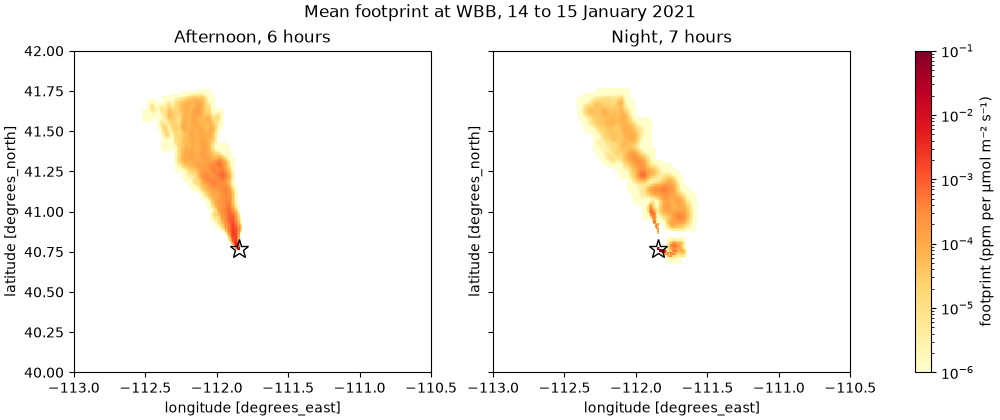

Tutorial: A Day Of Tower Footprints#
A tower measures the same place every hour, but the air it samples does not come from the same place. In the afternoon the boundary layer is deep and the wind brings air from farther away. At night the air near the ground grows still and the tower sees more of its own neighborhood. In this tutorial we run a footprint for every hour of one winter day at a rooftop site and compare the afternoon with the night.
The site is WBB, a long-running greenhouse gas site on the roof of the William Browning Building at the University of Utah in Salt Lake City. The same steps work for any fixed site, with its own coordinates.
You need ARL meteorology for the hours of your receptors and the hours the runs go back into. Here that is 06:00 UTC on 14 January 2021 to 11:00 UTC on 15 January (Meteorology).
Step 1: One receptor per hour#
Each measurement is a receptor. We make one for every hour from 18:00 UTC on 14 January (11:00 in Salt Lake City) to 11:00 UTC the next morning (04:00):
In [1]: import pandas as pd
In [2]: import stilt
In [3]: times = pd.date_range("2021-01-14 18:00", "2021-01-15 11:00", freq="1h")
In [4]: receptors = [
...: stilt.PointReceptor(
...: time=t,
...: latitude=40.7665,
...: longitude=-111.8472,
...: altitude=21.0, # inlet height above ground, in meters
...: )
...: for t in times
...: ]
...:
In [5]: len(receptors)
Out[5]: 18
If your measurement times are in a spreadsheet, save them as a CSV and read
them with stilt.read_receptors() (Receptors).
Step 2: Make the project#
A project keeps the receptors, the settings and the results together, so you can stop and pick up where you left off:
In [6]: project = stilt.Project.init(
...: "./wbb_project",
...: receptors=receptors,
...: n_hours=-12, # follow the air 12 hours back
...: numpar=100, # particles per receptor
...: krand=2,
...: seed=42, # the same particles on every run
...: mets={"hrrr": met},
...: grid={
...: "xmin": -113.0, "xmax": -110.5,
...: "ymin": 40.0, "ymax": 42.0,
...: "xres": 0.01, "yres": 0.01,
...: },
...: variants={"hrrr": {}},
...: execution={"backend": "local", "cpus": 4}, # 4 receptors at a time
...: )
...:
We use 100 particles and 12 hours so that this page builds quickly. For a study we would use 1000 particles and 24 hours or more, because a footprint from few particles is noisy far from the site, and 12 hours may not reach the far edge of the region (Projects And Variants).
In a later session, open the project with stilt.Project("./wbb_project").
Step 3: Check and run#
check finds what would stop a run, such as a missing met file, before
anything starts. An empty table means nothing is in the way:
In [7]: project.check()
Out[7]:
Empty DataFrame
Columns: [check, variant, receptor, message]
Index: []
In [8]: project.run();
A run you stop with Ctrl-C picks up where it left off when you start it
again, and stilt status ./wbb_project shows the progress from another
terminal.
Note
In a script (python wbb.py), put everything from Step 1 on under
if __name__ == "__main__":. With cpus above 1, Python 3.14, macOS,
and Windows start each worker by importing the script again, which would
run Project.init again and stop with a FileExistsError.
Step 4: Afternoon against night#
project.footprints() loads every footprint into one dataset, with a
receptor axis. We sum each footprint over its hours, then split the
receptors into the afternoon (11:00 to 16:00 local time) and the night
(22:00 to 04:00):
In [9]: footprints = project.footprints()
In [10]: total = footprints.foot.sum("hour").compute()
In [11]: utc = project.simulations.set_index("receptor")["time"]
In [12]: local = (utc - pd.Timedelta("7h")).dt.hour.reindex(total.receptor.values)
In [13]: afternoon = total.sel(receptor=local.index[local.between(11, 16)])
In [14]: night = total.sel(receptor=local.index[(local >= 22) | (local <= 4)])
Then we map the mean of each group:
In [15]: import matplotlib.colors as mcolors
In [16]: import matplotlib.pyplot as plt
In [17]: fig, axes = plt.subplots(1, 2, figsize=(10, 4.2), sharey=True, layout="constrained")
In [18]: norm = mcolors.LogNorm(vmin=1e-6, vmax=1e-1)
In [19]: for ax, group, name in zip(axes, [afternoon, night], ["Afternoon", "Night"]):
....: mean = group.mean("receptor")
....: mesh = mean.where(mean > 0).plot(ax=ax, norm=norm, cmap="YlOrRd", add_colorbar=False)
....: ax.plot(-111.8472, 40.7665, marker="*", markersize=14, markerfacecolor="none", color="k")
....: ax.set_title(f"{name}, {group.sizes['receptor']} hours")
....:
In [20]: fig.colorbar(mesh, ax=axes, label="footprint (ppm per µmol m⁻² s⁻¹)");
In [21]: fig.suptitle("Mean footprint at WBB, 14 to 15 January 2021");


Both maps point north-northwest, up the valley along the east shore of the Great Salt Lake, because the wind came from there through the whole day. In the afternoon the footprint is one band about 100 km long, with the most influence along it near the site. At night the band breaks up, and much of the footprint sits in the few cells around the site, inside the star. The night’s footprint is also more than twice as large in total, because the shallow night-time layer holds the air close to the ground, where the surface fluxes enter it.
One number sums up the difference: the share of each footprint within about 5 km of the site.
In [22]: near = (abs(total.lon + 111.8472) < 0.06) & (abs(total.lat - 40.7665) < 0.045)
In [23]: share = total.where(near).sum(["lat", "lon"]) / total.sum(["lat", "lon"])
In [24]: print(f"afternoon {share.sel(receptor=afternoon.receptor).mean():.0%}, "
....: f"night {share.sel(receptor=night.receptor).mean():.0%}")
....:
afternoon 29%, night 77%
So at night the tower is mostly a measurement of its own neighborhood, and in the afternoon of the valley to the north. A study that compares modeled and measured concentrations often keeps only afternoon hours for this reason, because the footprints there are less sensitive to the details of the night-time boundary layer.
Next#
Turn footprints into modeled concentrations in Tutorial: From Footprints To Concentrations.
Load and plot results in other ways: Footprints And Particles.
Run a whole year on a cluster: On An HPC Cluster (Slurm).